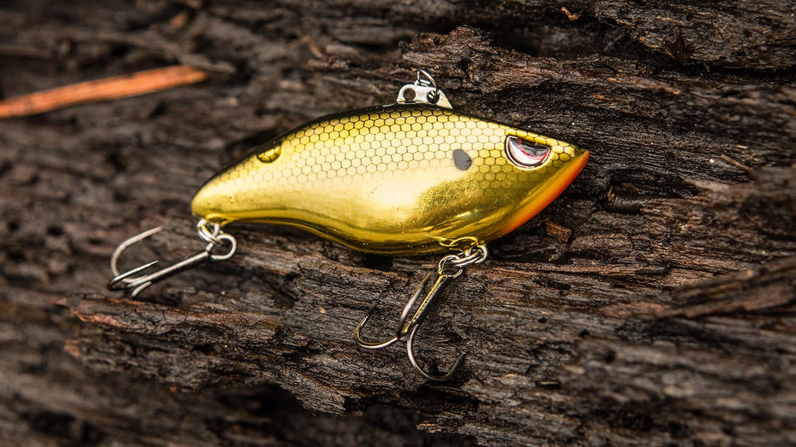

Recommened rod type power

medium light - medium power
line test
it is dependent on what size that you target the you will be fine for many specias of walleye with 10- 15lbs monofilament line if using braid 8-10lbs should be sufficent.
What lures to use
the best lures that have worked for me are crank baits. There are many types of lures that will worked it is dependent of where you live. you want to imidtate what evr they eat normally.
